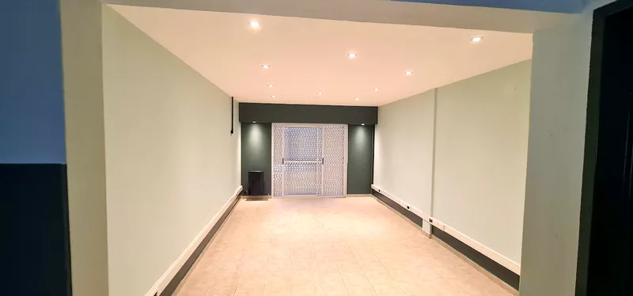

Econex hace mantenimiento de climatización, refrigeración, instalaciones eléctricas y tableros en sanatorios, clínicas, laboratorios y centros de diagnóstico de Ciudad de Buenos Aires y Gran Buenos Aires. Trabajamos coordinados con el área de mantenimiento para que la atención no se interrumpa.

Qué resolvemos
- Climatización de quirófanos, terapias, salas de internación, consultorios y áreas de espera.
- Temperatura estable en laboratorios, salas de equipos y depósitos de insumos.
- Refrigeración de cámaras y heladeras de uso institucional.
- Adecuación de redes eléctricas para equipamiento médico y de diagnóstico.
- Tableros eléctricos, circuitos dedicados y mediciones de puesta a tierra.
- Planes preventivos con informe técnico por visita, útiles para auditorías.
Cómo trabajamos en entornos de salud
- Planificación por sectores y en horarios acordados.
- Obra limpia y ordenada, con protección de las áreas de trabajo.
- Registro de cada intervención y de los valores medidos.
- Un interlocutor técnico estable para la institución.
Parte de Grupo Nexo
Grupo Nexo da soporte técnico a instituciones de salud en Argentina, Chile y Estados Unidos. Mientras Nexolibre se ocupa de la ingeniería de equipos de diagnóstico por imágenes, Econex cuida la infraestructura que esos equipos necesitan: energía confiable y ambientes climatizados.
Preguntas frecuentes
¿Trabajan en sanatorios y clínicas en funcionamiento?
Sí. Planificamos cada intervención con el área de mantenimiento o la dirección, por sectores y en horarios acordados, para no afectar la atención de pacientes.
¿Hacen adecuaciones eléctricas para equipamiento médico?
Sí. Adecuamos redes y circuitos para equipos médicos y de diagnóstico, con circuitos dedicados, protecciones adecuadas y puesta a tierra verificada.
¿Qué instituciones de salud confían en Econex?
Entre nuestros clientes del sector salud están Investigaciones Médicas, Sanatorio Delta, OSECAC y AMFFA Salud.
¿Qué relación tienen con Nexolibre?
Econex y Nexolibre forman parte de Grupo Nexo. Nexolibre se dedica a la ingeniería y reparación de equipos de diagnóstico por imágenes; Econex, a la climatización y la infraestructura eléctrica de las instituciones.